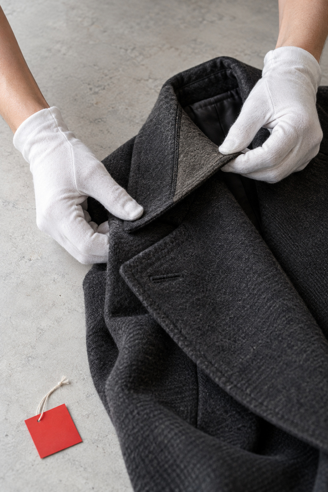
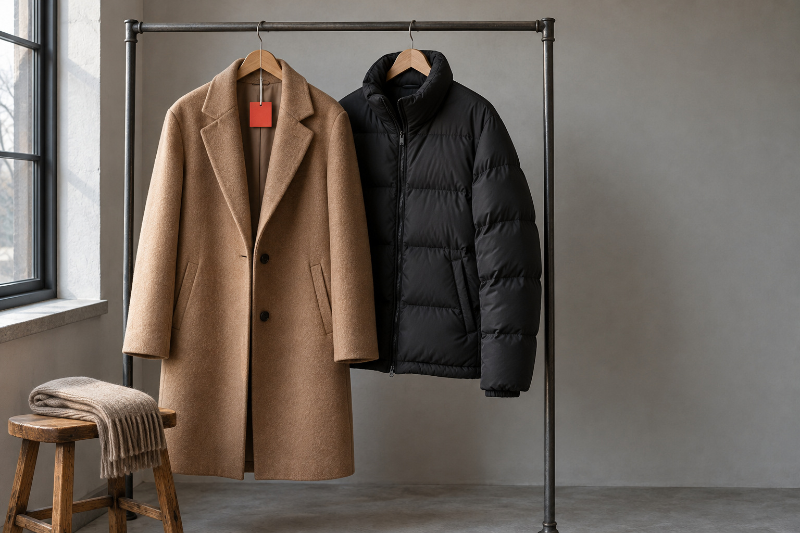

精品與皮件，
先看面料與五金。
直接回答 — 名牌衣服、皮衣要怎麼送洗？
依洗標與面料判斷乾洗或水洗，五金、飾件、亮片先確認，不因品牌名稱保證全新。精品襯衫 $100、精品外套 $200、皮衣 $1200、特殊皮衣 $2000；發霉特污、補色修補另計，皮件約 14 天。
同樣是外套，
風險不一樣。
先看洗標與結構
羊毛大衣常有襯裡與墊肩，水洗容易縮皺變形；針織怕縮絨，洗標不確定時不要機洗。
毛衣 $150・長大衣 $300先看塗層與走線
多數適合專業水洗加低溫烘乾，不是乾洗；有防水塗層的款式要另外判斷，不保證恢復全新蓬鬆。
羽絨外套 $280・羽絨被 $600發霉先別擦
先分真皮、合成皮、麂皮，再看霉在表面還是已滲入。濕布或酒精擦會把霉推進毛孔。
皮衣 $1200・特殊皮衣 $2000先看面料與五金
依洗標與面料判斷乾洗或水洗，五金、飾件、亮片先確認。
精品襯衫 $100・精品長大衣 $350先看領口袖口
領口、袖口的油光屬於油性髒污，和汗味的處理方向不同。西裝多走乾洗，襯衫水洗加整燙。
襯衫 $70・整燙 $50看髒污的種類
乾洗用溶劑帶走油性髒污並保護版型；水洗對汗味與水性髒污更有效。判斷不了就拍洗標。
DRY OR WET — 洗法
乾洗還是水洗？
看髒污的種類。
判斷不了就拍洗標，門市看完再建議。

用溶劑帶走油性髒污，保護版型。
常見：西裝、羊毛大衣、有襯裡與墊肩的外套，依洗標判斷。

對汗味與水性髒污更有效。
常見：襯衫、棉T；多數羽絨外套走專業水洗加低溫烘乾。
老實說。
扣件、邊角、脫膠等可評估局部整理或修復，結果依材質與損況而定。不保證恢復原色或變全新，不做醫療滅菌承諾。能改善到哪，看完照片先說清楚，再由你決定。
LINE 送洗 — 官方帳號 @454foyks
照這樣傳，
判斷最準。
精品先看洗標、面料與五金。三張照片，門市就能先判斷洗法。
 01
01整件照正反面各一張，看得到版型與五金。 - 02
痕跡近照領口、袖口、腋下、五金邊，靠近拍。  03
03洗標與材質洗標決定乾洗或水洗，一定要拍。
1 選品項（可複選）
2 選你的區域
3 確認訊息，開啟 LINE
你好，我想詢問精品／皮件送洗： ・（品項）× ＿ 區域：西屯區 品牌／材質：＿＿ 照片另傳。
用電腦看？
手機掃描加入 LINE 官方 @454foyks，再把照片傳過來。
LINE 官方 @454foyks・電話 04-2452-7411・週一至五 10:00–20:00、週六 12:00–18:00
送洗前，
先問這幾題。
精品外套和一般外套的價錢差在哪？+
薄外套 $150、厚外套 $180，精品外套 $200、精品厚外套 $230（水洗參考價）。
精品洋裝怎麼算？+
精品短洋裝 $180、中洋裝 $200、長洋裝 $210；禮服 $450，珠飾和內襯要先拍照給我們看。
皮褲、皮裙收嗎？多少錢？+
收。皮褲 $700、皮裙 $600、皮背心 $800；發霉另計，不保證恢復原色。
洗標只有乾洗符號，可以改用水洗比較便宜嗎？+
會依洗標和材質判斷，不會只為了價錢改變洗法；表上是水洗參考價，乾洗、柔洗另計。
只送一件精品衣也可以收送嗎？+
可以，台中全市免費收送，沒有最低消費；清潔費另計。
精品衣物會做消毒或除臭嗎？+
不做除臭、消毒或醫療滅菌承諾。
東海有門市嗎？+
沒有。東海無門市，僅收送；門市只在西屯青海路二段365號。
私享家精品衣物清潔的做法與界線是什麼？+
私享家精品衣物清潔：精緻布料與名牌服先看材質再洗；扣件、邊角、脫膠等可評估局部整理或修復，結果依材質與損況而定，不保證恢復原色或變全新；不做除臭或醫療級滅菌承諾。